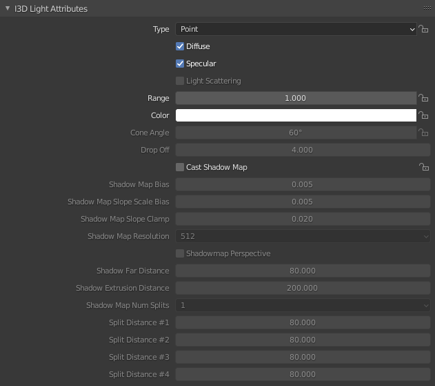

I3D Addon for Blender
Documentation:
Installation
Features
I3D Attributes
Where to find them
Reasoning behind the UI
UI Overview
Object Types
Light
UDIM-Picker
I3D Mapping
For Developers:
Guidelines
Toolchain
Software Structure
Code Reference
I3D Addon for Blender
Features
I3D Attributes
Light
View page source
Light

All light attributes at their default values